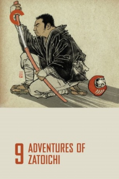

Also known as:座頭市関所破り (original title)
Country:Japan, 86 minutes
Spoken languages:Japanese
Genres:Adventure, Action, Drama
Director(s):Kimiyoshi Yasuda
Writer(s):Shozaburo Asai
Video Codec:Unknown
Number: 2815


Certification:
Storyline:
Blind swordsman/masseuse Zatoichi befriends a young woman looking for her father, a village leader who has disappeared. As he helps her investigate the disappearance, Zatoichi also becomes involved with another young woman who is trying to help her brother, who has murdered someone at about the same time and place as the missing man was last seen.
Cast:


Medium: Bluray,
Comments: Part of: Zatoichi - The Blind Swordsman collection
Loaned: No
Aspect ratio: Unknown